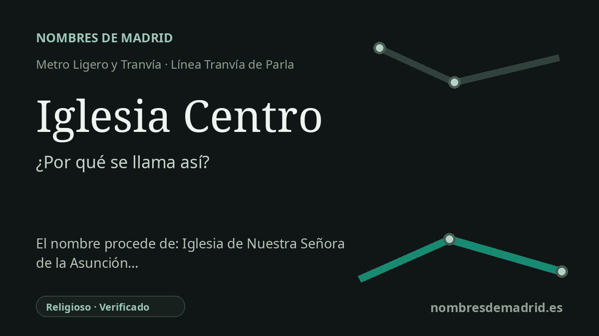

Publicado el · Investigación de Nombres de Madrid · Cómo verificamos cada origen · 6 fuentes consultadas
Respuesta rápida
Iglesia Centro toma su nombre de la iglesia de Nuestra Señora de la Asunción, la antigua parroquia de Parla, situada junto a la parada en el casco histórico. El templo data del siglo XVI, aunque gran parte de su aspecto actual procede de reconstrucciones del siglo XX.
La historia del nombre
Iglesia Centro significa, literalmente, la parada de la iglesia en el centro. El nombre remite a la iglesia de Nuestra Señora de la Asunción, la parroquia histórica situada junto al trazado del tranvía en la calle Real. El Consorcio Regional de Transportes sitúa el acceso de la estación en la calle Real, 28, y la documentación urbanística municipal describe la parada frente a los terrenos ubicados entre la calle Real y la iglesia.
El templo también es conocido en Parla como la iglesia vieja. La ruta patrimonial municipal lo fecha en el siglo XVI y señala que fue reconstruido en gran parte a lo largo del siglo XX. De la construcción primitiva, el Ayuntamiento destaca la cabecera de estilo gótico como el elemento histórico conservado, con muros de piedra y ladrillo relacionados con la tradición de la mampostería toledana.
La historia que hay detrás del nombre de la parada es más rica de lo que parece. Una publicación especializada de Jose Gomez-Menor y Fuentes, editada por la Real Academia de Bellas Artes y Ciencias Históricas de Toledo, transcribe un contrato fechado el 24 de abril de 1522 por el que el pintor Juan de Borgoña se obligaba a hacer un retablo para la iglesia de Parla. El contrato se otorgó en nombre de la villa y de la iglesia de Parla, con Payo Barroso de Ribera, señor de Parla, entre los intervinientes, y preveía un retablo dorado y pintado con una imagen de Nuestra Señora de la Asunción.
La parada señala también una capa moderna de transporte sobre el antiguo eje central de Parla. El Tranvia de Parla discurre por la calle Real a través del casco histórico, y la empresa operadora describe la red como una línea circular en superficie de 15 paradas y 8,3 kilómetros, en servicio desde 2007. En este contexto, Iglesia Centro funciona menos como un nombre conmemorativo que como una referencia urbana práctica: la iglesia sigue siendo el punto de orientación de la parada.
La explicación del nombre es, por tanto, segura, pero algunos detalles históricos conviene expresarlos con cautela. El Ayuntamiento respalda la datación en el siglo XVI, la cabecera gótica y la gran reconstrucción del siglo XX; el retablo de Borgoña de 1522 está avalado por una publicación archivística especializada. El retablo colocado en 2020 está documentado por el taller Artemartinez como una obra neogótica instalada en mayo de 2020, por lo que es más prudente describirlo como un retablo historicista moderno y no como una replica estricta del retablo renacentista de Borgoña.